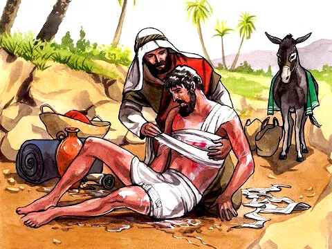

O Bom Samaritano
Referência Bíblica: Lucas 10:25-37
Essa história contada por Jesus chama-se Parábola do Bom Samaritano. As parábolas eram historinhas que Jesus ensinava, para as pessoas compreenderem melhor os ensinos de Deus. E, "samaritano" era uma pessoa que vivia em Samaria, uma terra próxima da Judeia. Mas os judeus não gostavam nadinha dos samaritanos, era totalmente impensado existir algum samaritano bondoso.
Um dia, se aproximou de Jesus um homem muito inteligente, era um advogado e professor da Lei (Palavra de Deus), muito sabichão. Ele conhecia muito bem a Bíblia, mas queria testar se Jesus também sabia das coisas.
Então perguntou ao Senhor Jesus o que deveria fazer para alcançar a vida eterna. Jesus lhe perguntou: — "O que diz a Bíblia sobre isso? O homem respondeu: — "Ame ao Senhor seu Deus, de todo coração, com todas as forças e inteligência, e ame também ao seu próximo, como a você mesmo." Jesus, disse-lhe: — "Muito bem, você respondeu certo. Faça isso, que você alcançará a vida eterna!"
Mas o mestre da Lei voltou a perguntar: E então, quem é o meu próximo? Então Jesus contou a história:
— "Certa vez, ia um homem da cidade Jerusalém para outra chamada Jericó. As estradas por vezes eram perigosas para quem viajava sozinho, então apareceram alguns ladrões maldosos, que lhe roubaram a roupa e tudo que aquele homem possuía. Coitado do homem... Além de roubarem eles também bateram nele muito, a ponto de o deixarem desacordado no chão.
Por acaso, instantes depois, também passou por aquele caminho um sacerdote (os sacerdotes eram como pastores ou presbíteros das igrejas). Quando ele viu o homem todo machucado, passou pelo outro lado da rua, e não lhe ajudou.
Também passou por lá um levita (os levitas eram como os diáconos ou ministros de louvor que também serviam nas igrejas). Mas quando ele viu o homem caído no chão, também se desviou e não o ajudou. Mas de repente também apareceu um samaritano que ia de viagem também. Ele não se afastou. Passou perto do homem ferido e teve misericórdia (pena e vontade de ajudar). Ele se aproximou do homem, tratou dos seus machucados, limpou e colocou curativos nos ferimentos todos. Depois colocou-o em cima do seu animal (um cavalo ou jumento) e o levou para uma pensão, onde o ferido poderia se recuperar daquele espancamento horrível. O bom samaritano cuidou bem dele.
No dia seguinte, o samaritano deu 2 moedas de prata ao dono da hospedaria. E disse-lhe: — Cuida deste homem. E se você gastar algo mais com ele, quando eu voltar, eu lhe pago tudo direitinho. Jesus então perguntou ao professor da Bíblia: — Qual dos 3 foi o próximo do homem que foi assaltado e agredido pelos ladrões na estrada? Ele lhe respondeu: — O que teve misericórdia dele. Então Jesus concluiu: — Vai e faça você também o mesmo."
Moral da História
Essa história responde à pergunta: "Quem é o meu próximo?" Com ela aprendemos algo impressionante, devemos amar e fazer o bem a todos que necessitam, seja quem for. Jesus deu uma grande lição a todos sobre amor ao próximo, usando a figura do samaritano. Todos, principalmente as pessoas religiosas, que estão envolvidas na igreja e com as coisas de Deus, precisam de ter atenção a isso. O que mais surpreende é que o samaritano era o único personagem que ninguém esperava que fosse ajudar alguém. Os samaritanos eram malvistos pelos judeus (eram desprezados, eram considerados como gente que não presta). E mesmo assim, ele ajudou a um desconhecido. Que grande lição todos nós podemos aprender com essa história do Bom Samaritano, não é? Distribua o amor que você recebe de Deus e ajude sempre a quem necessita.